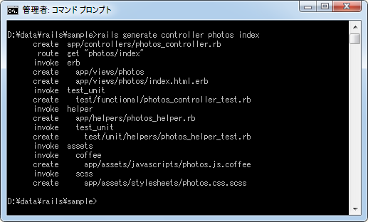
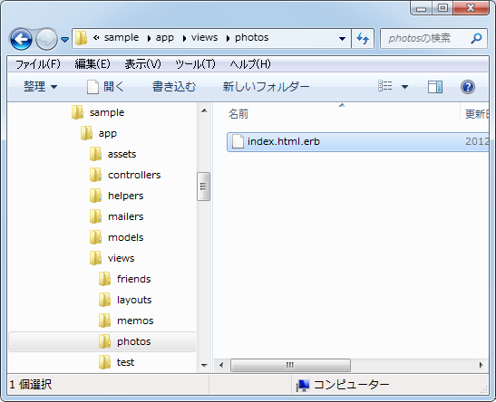
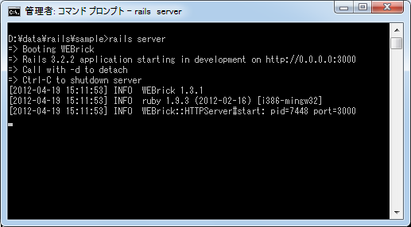
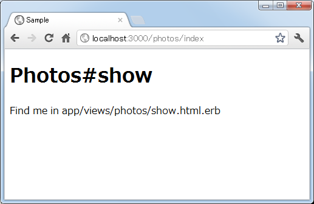
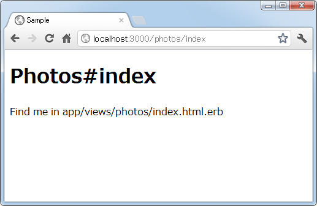
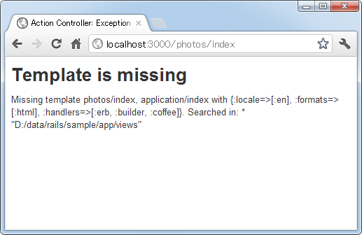

アクションからテンプレートを呼び出す
利用者からアクションが呼び出されると、アクションはモデルを使ってデータベースからデータを取得するなどを行い、何らかの結果を利用者へ返します。この時、アクションはビュー(テンプレート)を使って利用者へ返す結果を作成します。ここではアクションからテンプレートを呼び出す方法について解説します。
1.テンプレートの呼び出し
2.別のアクション用のテンプレートを呼び出す
3.アクションメソッドがなくテンプレートだけがある場合
4.テンプレートが存在しない場合
テンプレートの呼び出し
Railsではアクションが呼び出された場合、何らかの結果を一度だけ利用者へ返す必要があります。アクションメソッド内で直接利用者へ結果を出力することも可能ですが、通常はビューに該当するテンプレートを使って利用者へ返す結果を作成し出力します。
特に指定しない場合、アクションが利用するテンプレートは「アクション名.html.erb」という名前のテンプレートを呼び出します。その為、アクションメソッドの中で直接出力を行なったりリダイレクトなどをしなかった場合は、メソッドの最後で自動的にテンプレートが呼び出されることになっています。
極端な話、次のようにアクションメソッド内が空の場合、メソッドの中では何も処理が行われませんが、最後に「アクション名.html.erb」という名前のテンプレートが自動的に呼び出されます。
class FriendsController < ApplicationController def new end end
アクションから自動的に呼び出されるテンプレートの保存場所は「app/views/コントロール名/」です。例えば「frines」コントローラの「new」アクションが使用するテンプレートは「app/views/friends/new.html.erb」となりますので、手動でテンプレートを作成される場合はこの場所のこのファイル名で作成して下さい。
では実際に試してみます。「sample」アプリケーションの中に新しく「photos」コントローラを作成し、さらに「index」アクションを同時に作成します。
rails generate controller photos index

作成されたコントローラクラス(app/controllers/photos_controller.rb)を見てみます。
class PhotosController < ApplicationController def index end end
「index」アクションのメソッドの中には何も定義されていません。
次に「index」アクションから呼び出すテンプレートを作成します。今回の場合は「app/views/photos/index.html.erb」となるのですが、コントローラの作成時にアクションを同時に作成した場合、そのアクションのデフォルトテンプレートも自動的に作成されています。

自動で作成された「index.html.erb」の中身を確認すると次のような記述がされています。
<h1>Photos#index</h1> <p>Find me in app/views/photos/index.html.erb</p>
アクションを呼び出した場合、途中で別の出力を返していない場合はアクション名と同じ名前のテンプレートが呼び出され、テンプレートによって作成された結果が利用者へ返されますので、今回「index」アクションを呼び出すと「index.html.erb」によって作成された結果が利用者へ返されることになるわけです。
では「sample」アプリケーションを実行して下さい。

次にブラウザから「http://localhost:3000/photos/index」へアクセスして下さい。すると次のように表示されます。
※ テンプレートを使ってどのように利用者へ返す結果を作成するのかについては別のページで解説します。
別のアクション用のテンプレートを呼び出す
アクション内で条件分岐などを行い、その結果としてデフォルトのテンプレートではない別のアクション用のテンプレートを呼び出したい場合もあります。
そのような場合は次の構文を使って明示的に呼び出すテンプレート指定することができます。まずは同じコントローラに含まれるアクションに対応したテンプレートを呼び出す場合です。
render :action => 'アクション名' render 'アクション名'
別のコントローラに含まれるアクションに対応したテンプレートを呼び出す場合は次のように記述します。
render :template => 'コントローラ名/アクション名' render 'コントローラ名/アクション名'
いずれの場合も、指定したアクションを呼び出しているのではなく、アクション名がついたテンプレートを呼び出して利用者へ返す結果を作成しているだけという点に注意して下さい。その為、アクションは実際にコントローラクラス内で定義されている必要はありません。
例えばindexアクションから同じコントローラ内のnewアクションの名前が付いたテンプレートを呼び出す場合は次のように記述します。
def index render "new" end
この場合、実際に呼び出されるテンプレートは「app/views/photos/new.html.erb」となります。
別のbooksコントローラ内のshowアクションの名前が付いたテンプレートを呼び出す場合は次のように記述します。
def index render "books/show" end
では実際に試して見ます。先程作成したコントローラのクラス(app/controllers/photos_controller.rb)を次のように変更します。
class PhotosController < ApplicationController
def index
render "show"
end
end
次に「app/views/photos/show.html.erb」というファイルを作成し、次のように記述します。
<h1>Photos#show</h1> <p>Find me in app/views/photos/show.html.erb</p>
これで準備はできましたのでアプリケーションを起動し、ブラウザから「http://localhost:3000/photos/index」へアクセスして下さい。すると次のように表示されます。

このように「index」アクションを呼び出された時、「show」アクションのテンプレートを使って利用者へ結果を返すことができました。
アクションメソッドがなくテンプレートだけがある場合
アクションが呼び出された時、アクションメソッドが定義されていなくてもアクション名が付けられたテンプレートだけあればテンプレートを使って結果が作成されて利用者へ出力されます。
では実際に試して見ます。先程作成したコントローラのクラス(app/controllers/photos_controller.rb)を次のように変更します。
class PhotosController < ApplicationController end
「index」アクションのメソッドに関する記述を削除しました。ただ「app/views/photos/index.html.erb」はそのまま残してあります。
ではブラウザから「http://localhost:3000/photos/index」へアクセスして下さい。すると次のように表示されます。

このように「index」アクションを呼び出された時、「index」アクションメソッドが定義されていなくても「index」アクションの名前が付いたテンプレートがあればテンプレートを使って利用者へ結果を返すことができました。
テンプレートが存在しない場合
アクションメソッド内で直接結果を出力しなければ、アクション名が付けられたテンプレートが自動的に呼び出されますが、そのテンプレートが存在しない場合はエラーとなります。
では実際に試して見ます。先程作成したコントローラのクラス(app/controllers/photos_controller.rb)を次のように変更します。
class PhotosController < ApplicationController def index end end
そして「index」アクションの名前が付いた「app/views/photos/index.html.erb」を削除します。
ではブラウザから「http://localhost:3000/photos/index」へアクセスして下さい。すると次のようにエラーが表示されます。

エラーメッセージは「Template is missing」です。このエラーメッセージが出た場合は、テンプレートが存在しているかどうか確認してみて下さい。
( Written by Tatsuo Ikura )

著者 / TATSUO IKURA
初心者～中級者の方を対象としたプログラミング方法や開発環境の構築の解説を行うサイトの運営を行っています。